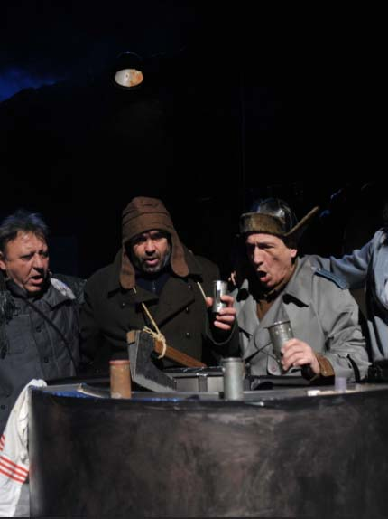
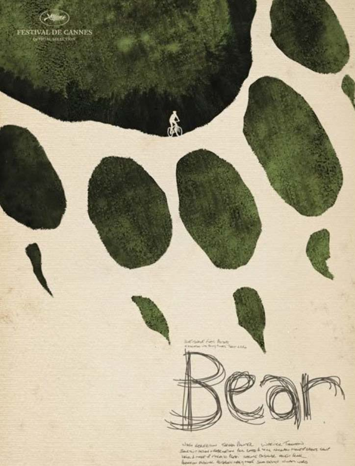
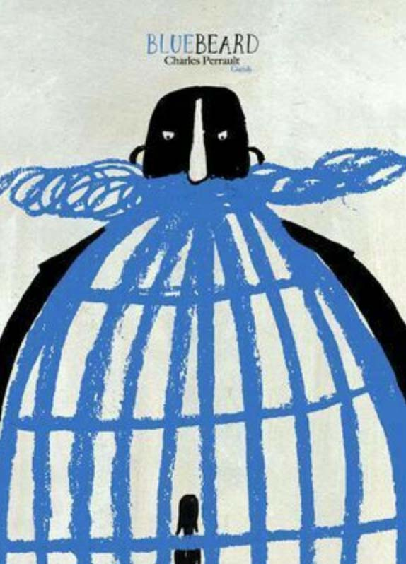
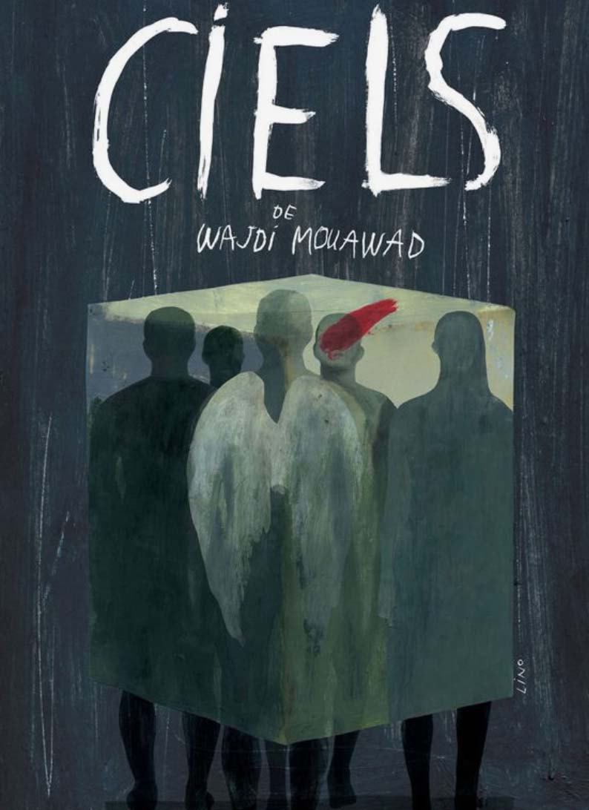
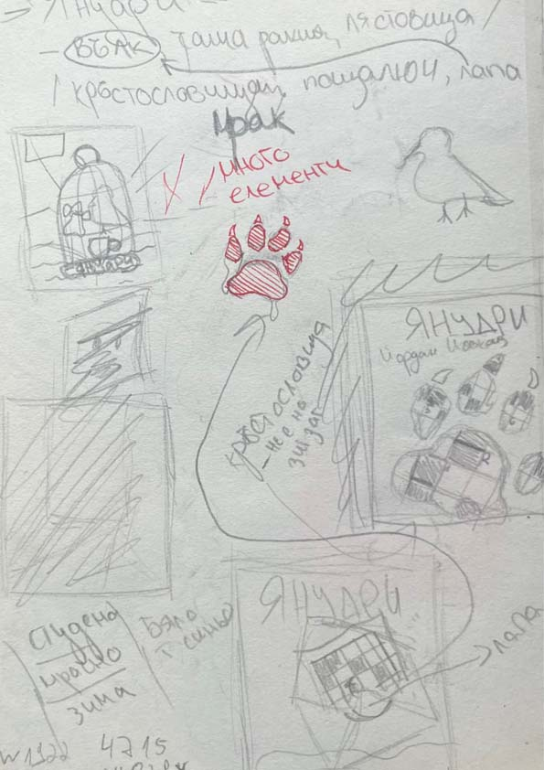
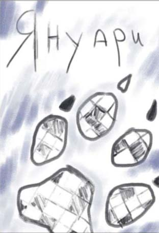
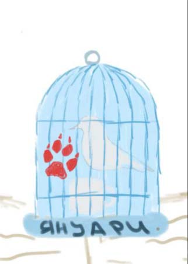
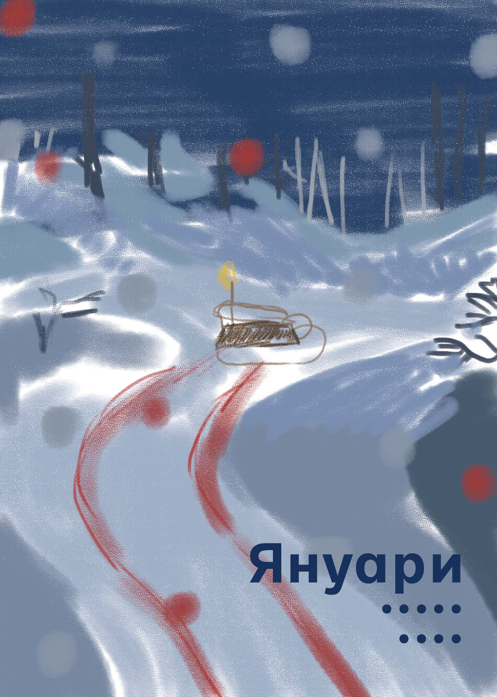

"January" Theatre Poster
In the middle of nowhere during heavy storm, five men find themselves trapped in the snow. One of them must cross the forest to reach the town, but on the snow-covered roads, he risks getting lost and freezing, while the wolves, hungry and howling from all sides… Based on a theater play “January” by Iordan Radickov I had to create a poster which showcased its essence.
Brainstorming
To truly understand the play, I watched it once to gain an insight of the plot. Then, I watched it a second time, writing down all the key elements that caught my attention—details that I felt were crucial to include in the design. From there, I began to connect these pieces, brainstorming how different aspects of these elements could come together visually. It became a process of exploration, where each detail helped shape the concept further.
Inspiration




Sketches
Once I felt inspired, I focused on incorporating the selected elements into a design that would not only be visually striking but also convey the essence of the play. I experimented with how these elements could interact with each other.




Result
In the final version, I aimed for a simpler illustration, which depicts the play of crossword, letter, wolf, and the winter landscape. I wanted to create a sense of mystery, using the crossword as a metaphor for it itself, and being lost in the snow. The atmosphere also contributes in enhancing the feeling. I also incorporated subtle hint with the bloody scratch of the predator from the play, creating a visual that encourages viewers to dive deeper into its plot. Through this project, I learned to blend research with the concept of a play, diving in its meaning and incorporating elements that stand out. It helped me with creating a design that feels connected to the audience and truly reflects the essence of the play.